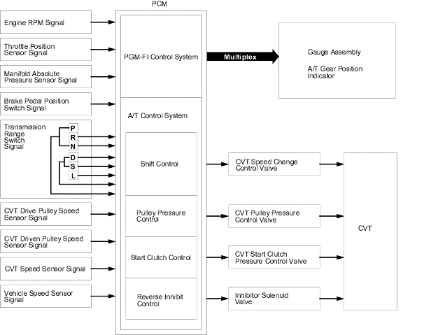

Honda Multi Matic Transmission/CVT
|
14-263 |
Electronic Control System
Functional Diagram
The electronic control system consists of the powertrain control module (PCM), sensors, switches and solenoid valves. Shifting is electronically controlled for comfortable driving under all conditions.
The PCM inputs signals from the sensors and switches, perform processing data and outputs signals for engine control system and A/T control system. The A/T control system includes shift control, pulley pressure control, start clutch pressure control and reverse inhibit control, is stored in the PCM.
The PCM actuates the solenoid valves to control shifting transmission pulley ratios.
